Lecture Notes 31: Even More Complexity and NP-Completeness
Outline
This class we'll discuss:
- Working with complexity classes
- NP-Completeness
Establishing Complexity


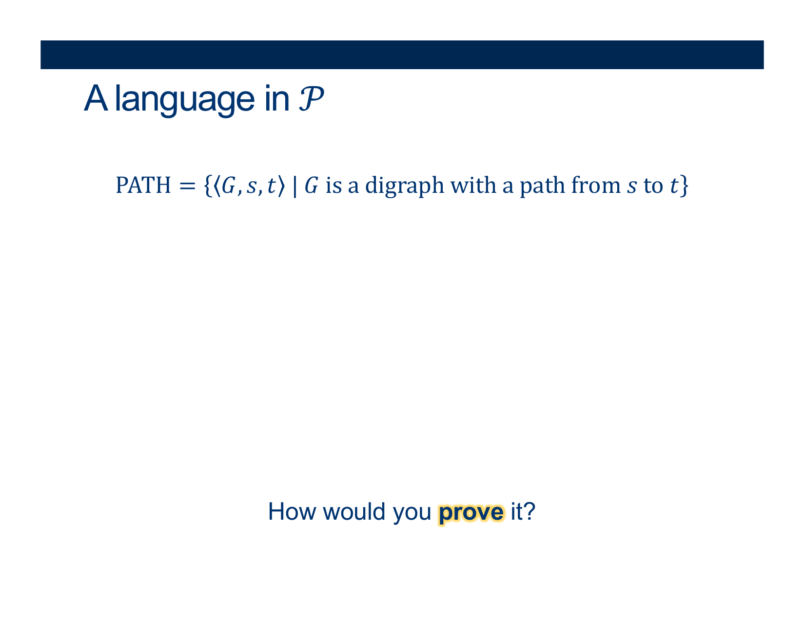
This is an example \( < G, s, t > \in PATH\)
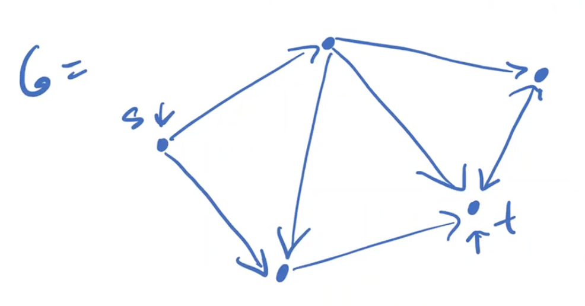
Activity 4 [2 minutes] How would you Prove this?:
(Wait; then Click)
You must build a Decider that solves it in \( \mathcal{O} (n^k) \) (Polynomial time)
Use Breadth-First-Search!
- On input \(< G, s, t>\)
- Mark all nodes rechable from the current node (starting at s and moving to the next in a running queue)
- Continue to expand until we reach \(t\) or \(\nexists\) another node
- if we reach \(t\) : ACCEPT
- REJECT
What is the complexity!!!???
Complexity analysis:
Worst case: traversing every edge.
How many edges? ...
Another approach:
At most \(\mid V \mid\) phases are executed.
Each phase takes polynomial time to explore marked nodes and their outgoing edges.
(Imagine \(\mid V \mid\) nodes in a straight line VS \(\mid V \mid\) nodes all connected to each other)

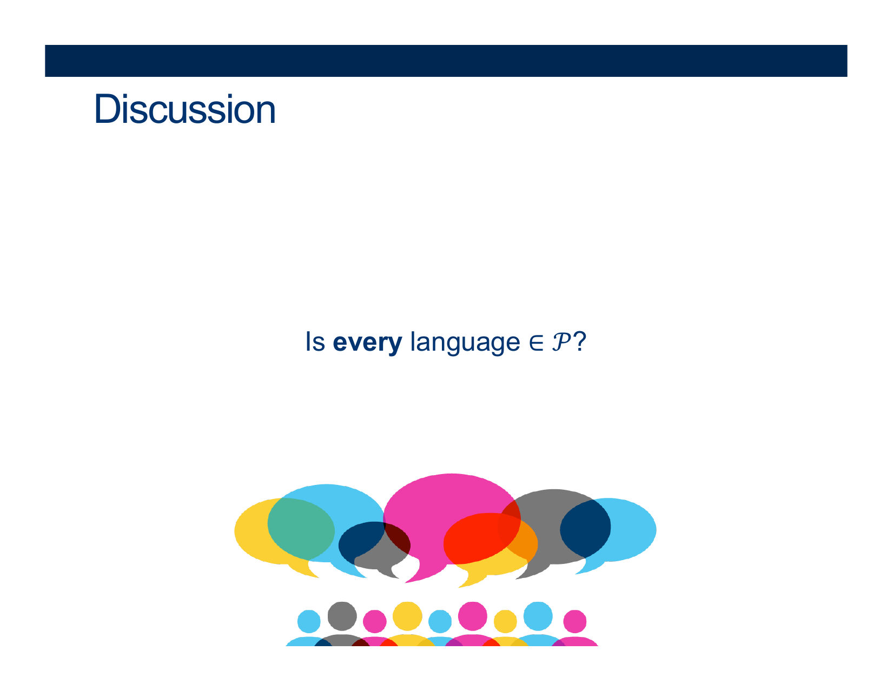


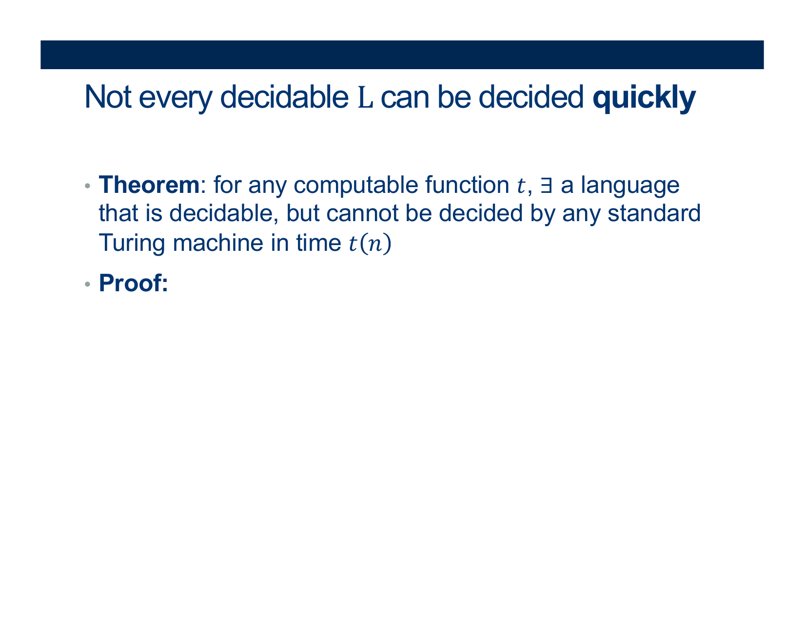
Activity 1 [2 minutes] How would you Prove this?:
(Wait; then Click)
\(AutoTM_t\) = { \(< M>\) | M is a TM that accepts \(< M>\) in ≤ \( t( \vert M \vert ) \) steps }
Claim 1: \(AutoTM_t\) is decidable
Proof of Claim 1:
On input \(< M>\) , simulate M on \(< M>\) for \( t( \vert M \vert ) \) simulated steps ADWID.
(What does this mean?)
The computation is BOUNDED... so it is DECIDABLE
Claim 2: \(AutoTM_t\) can’t be decided by any basic TM in ≤ \( t( \vert M \vert ) \) steps
Proof of claim 2: (everyone’s favorite contradiction argument)
Assume \(AutoTM_t\) is decided in time ≤ \( t( \vert M \vert ) \) by some TM \(M_A\)
This implies that the complement is also decided by some other TM \( M_\overline{A} \)
(just swap the accepting and rejecting states of \(M_A\) )
Now we have assumptions:
- \(M_A\): a TM that decides the language of words \(< M>\) such that they accept themselves in ≤ \( t( \vert M \vert ) \) steps
- \(M_\overline{A}\): a TM that decides the language of words such that they are either not TMs or they are \(< M>\)'s that don't accept themselves in ≤ \( t( \vert M \vert ) \) steps
Thus, for every Turing machine M:
- \(< M>\) ∈ \(\overline{AutoTM_t}\) iff \( M_\overline{A} \) accepts in time ≤ \( t( \vert M \vert ) \)
And by taking the complement of the definition of \(AutoTM_t\):
- \(< M>\) ∈ \(AutoTM_t\) iff \( M_{\overline{A} } \) does not accept \(< M>\) in time ≤ \( t( \vert M \vert ) \) .
(equivalent to:)
\(< M>\) ∈ \(AutoTM_t\) iff \( M_A \) accepts \(< M>\) in time ≤ \( t( \vert M \vert ) \) .
What happens if we plug in \( M_\overline{A} \) for M in both statements:
- \( M_\overline{A} \) ∈ \(\overline{AutoTM_t}\) iff \( M_\overline{A} \) accepts in time ≤ \( t( \vert M_\overline{A} \vert )\)
(But that means \( M_\overline{A} \) belongs to the language that accepts its description under the bound!)
- \( M_\overline{A} \) ∈ \(AutoTM_t\) iff \( M_\overline{A} \) does not accept in time ≤ \( t( \vert M_\overline{A} \vert )\).
– Contradiction!


Recap: Computational Complexity

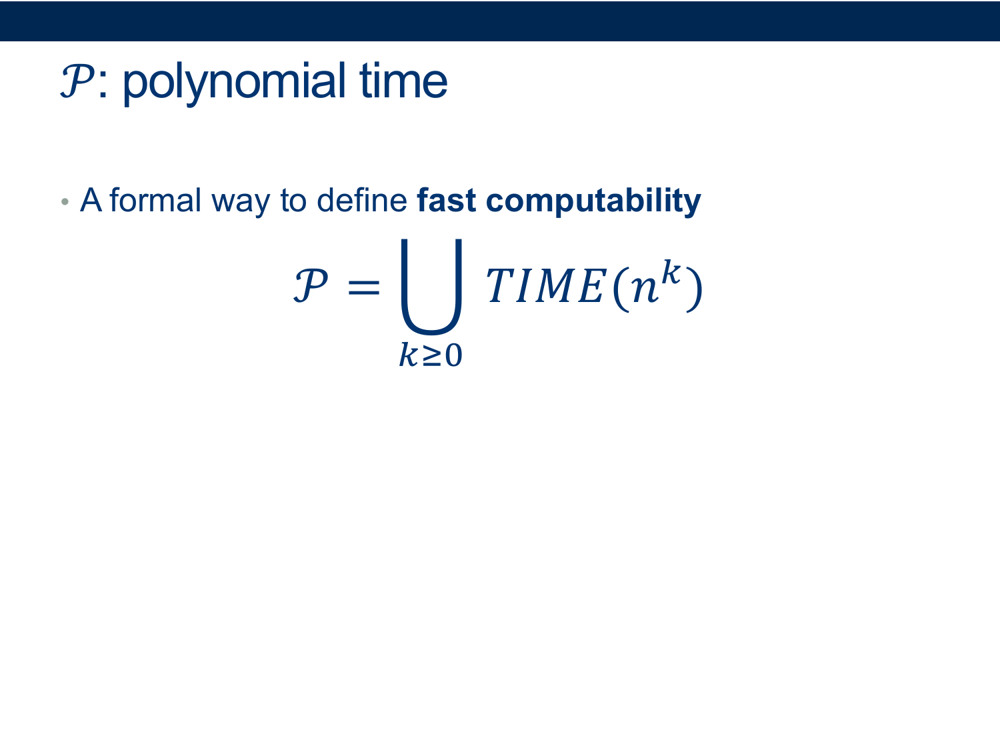


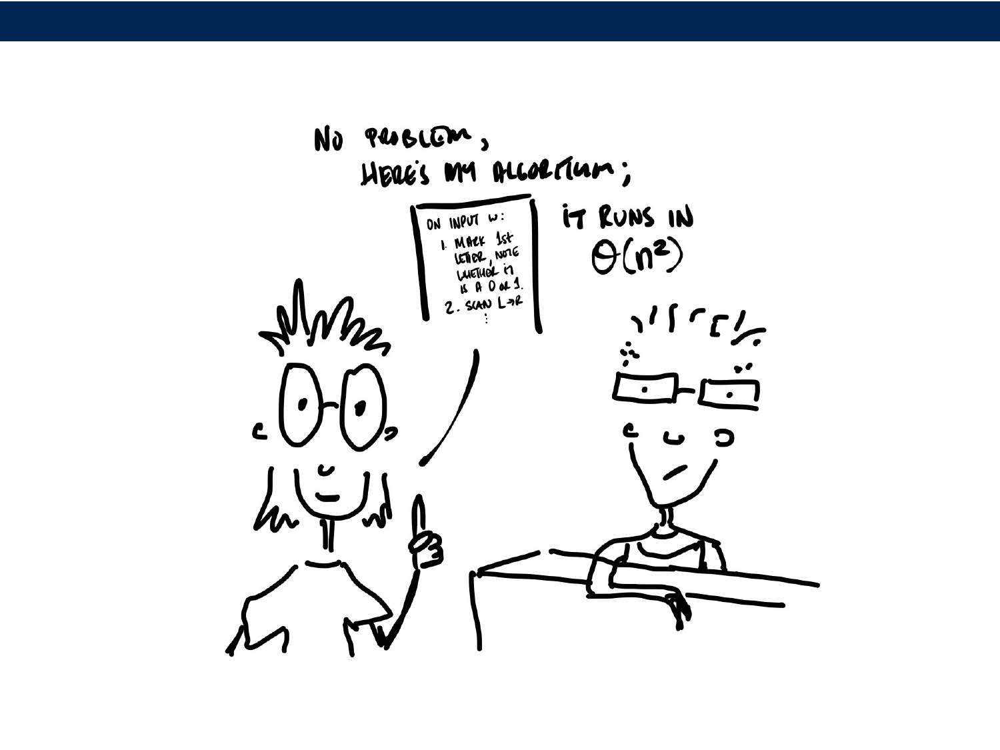
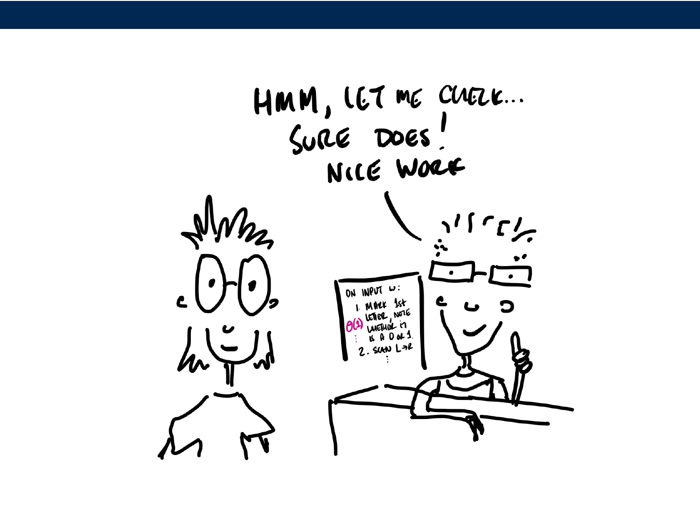
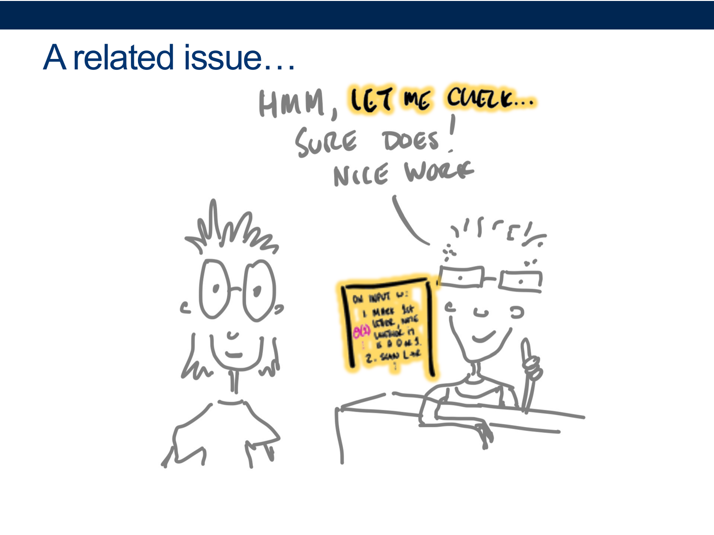


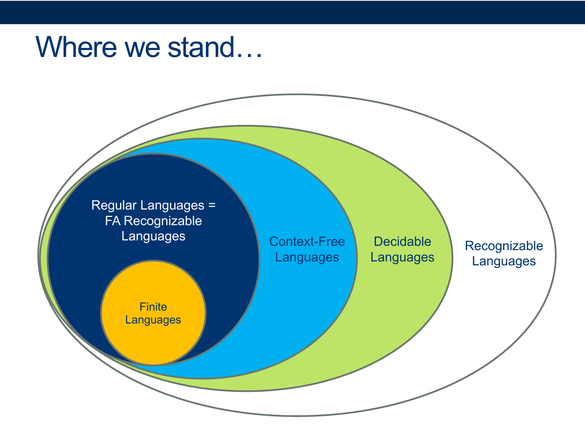

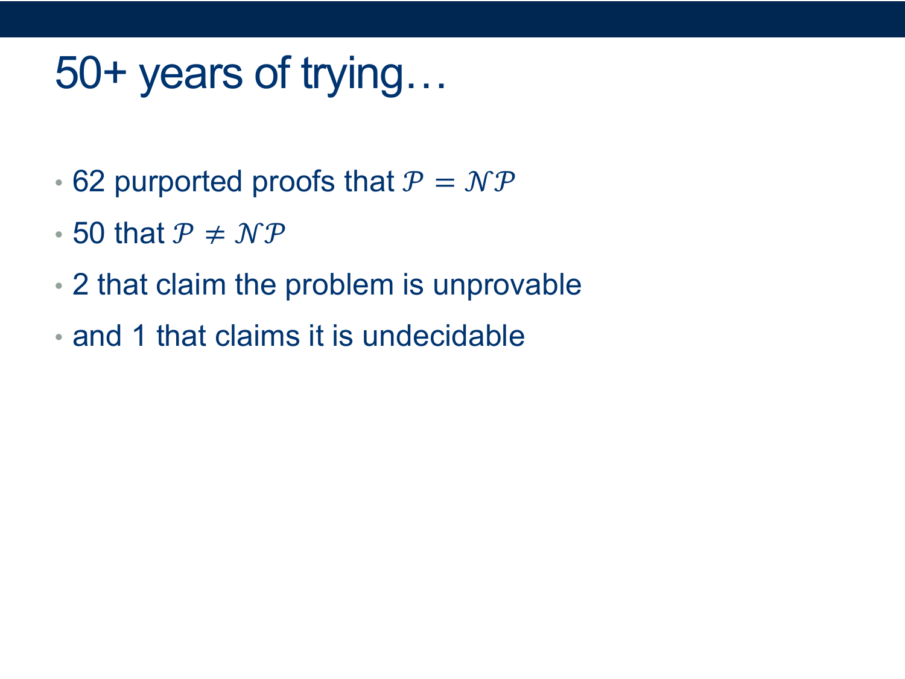


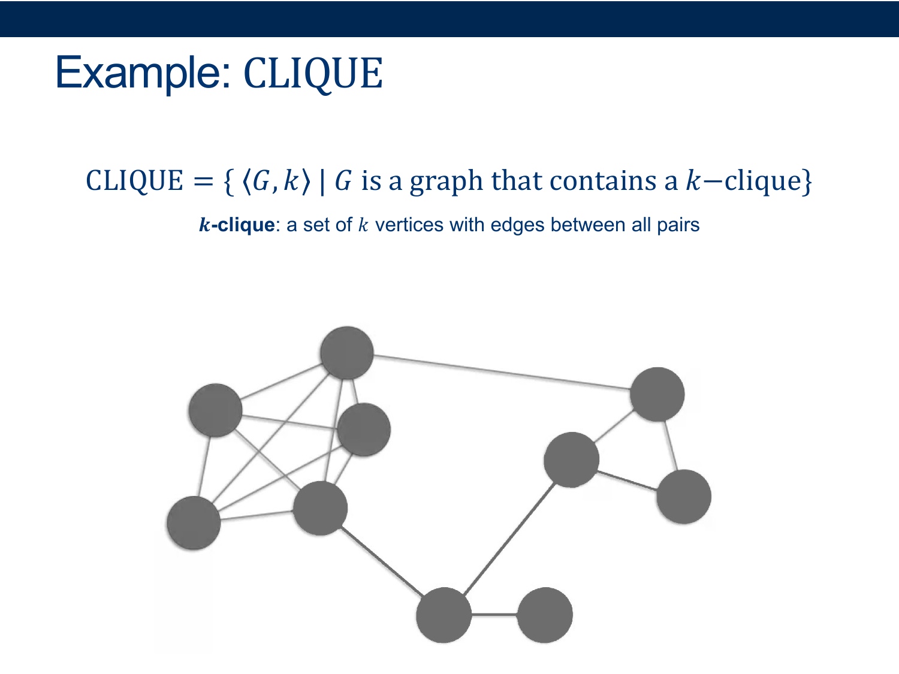

Activity 2 [2 minutes] How would you Prove this?:
(Wait; then Click)
To show a language is in NP using a verifier:
• Specify a certificate that can be used with a verifier to decide the language.
• Give a verifier that uses that certificate to verify membership in the given language.
• Prove that the language recognized by the verifier is the given language and that the verifier runs in polynomial time.
Certificate: a graph and a set of k vertices we claim is a cliquebr
Verifier: loop over all pairs in the set and check to make sure there’s an edge between them, and if so: ACCEPT - O(k^2) (can’t be bigger than n^2)
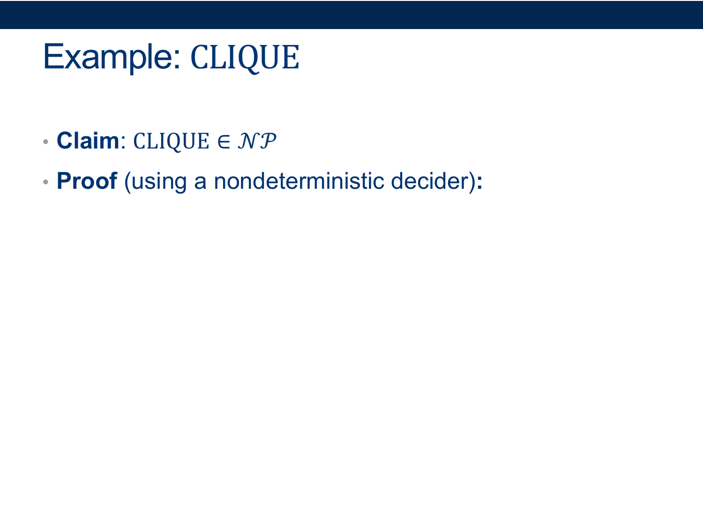
Activity 3 [2 minutes] How would you Prove this?:
(Wait; then Click)
Nondeterminism: we can try multiple “branches” of computation at once
The trick: each branch can only take polynomial time
Nondeterministically test all subsets of vertices. On each subset:
loop over all pairs in the (sub)set and check to make sure there’s an edge between them, and if so: ACCEPT - O(n^2)
if no branch accepts REJECT
Guaranteed to halt? YES (there’s nowhere to get stuck)
What would happen if we tried to serialize all the branches?
- how many possible subsets do we have to check? \(2^n\) <-- not polynomial anymore
- note: this just means that this particular algorithm doesn’t run in polynomial time, but it turns out we haven’t been able to find any polynomial-time deciders for this language


Homework
[Due for everyone]
PS07 for next Friday
[Optional]
TODO